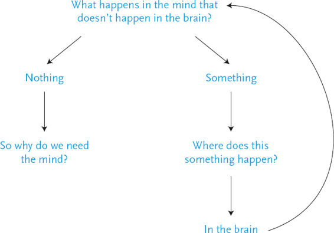
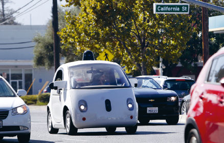
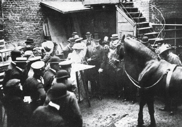
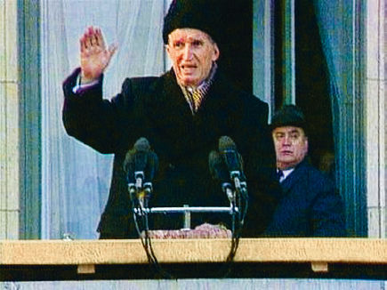

There is no doubt that Homo sapiens is the most powerful species in the world. Homo sapiens also likes to think that it enjoys a superior moral status, and that human life has much greater value than the lives of pigs, elephants or wolves. This is less obvious. Does might make right? Is human life more precious than porcine life simply because the human collective is more powerful than the pig collective? The United States is far mightier than Afghanistan; does this imply that American lives have greater intrinsic value than Afghan lives?
In practice, American lives are more valued. Far more money is invested in the education, health and safety of the average American than of the average Afghan. Killing an American citizen creates a far greater international outcry than killing an Afghan citizen. Yet it is generally accepted that this is no more than an unjust result of the geopolitical balance of power. Afghanistan may have far less clout than the USA, yet the life of a child in the mountains of Tora Bora is considered every bit as sacred as the life of a child in Beverly Hills.
In contrast, when we privilege human children over piglets, we want to believe that this reflects something deeper than the ecological balance of power. We want to believe that human lives really are superior in some fundamental way. We Sapiens love telling ourselves that we enjoy some magical quality that not only accounts for our immense power, but also gives moral justification for our privileged status. What is this unique human spark?
The traditional monotheist answer is that only Sapiens have eternal souls. Whereas the body decays and rots, the soul journeys on towards salvation or damnation, and will experience either everlasting joy in paradise or an eternity of misery in hell. Since pigs and other animals have no soul, they don’t take part in this cosmic drama. They live only for a few years, and then die and fade into nothingness. We should therefore care far more about eternal human souls than about ephemeral pigs.
This is no kindergarten fairy tale, but an extremely powerful myth that continues to shape the lives of billions of humans and animals in the early twenty-first century. The belief that humans have eternal souls whereas animals are just evanescent bodies is a central pillar of our legal, political and economic system. It explains why, for example, it is perfectly okay for humans to kill animals for food, or even just for the fun of it.
However, our latest scientific discoveries flatly contradict this monotheist myth. True, laboratory experiments confirm the accuracy of one part of the myth: just as monotheist religions say, animals have no souls. All the careful studies and painstaking examinations have failed to discover any trace of a soul in pigs, rats or rhesus monkeys. Alas, the same laboratory experiments undermine the second and far more important part of the monotheist myth, namely, that humans do have a soul. Scientists have subjected Homo sapiens to tens of thousands of bizarre experiments, and looked into every nook in our hearts and every cranny in our brains. But they have so far discovered no magical spark. There is zero scientific evidence that in contrast to pigs, Sapiens have souls.
If that were all, we could well argue that scientists just need to keep looking. If they haven’t found the soul yet, it is because they haven’t looked carefully enough. Yet the life sciences doubt the existence of soul not just due to lack of evidence, but rather because the very idea of soul contradicts the most fundamental principles of evolution. This contradiction is responsible for the unbridled hatred that the theory of evolution inspires among devout monotheists.
Who’s Afraid of Charles Darwin?
According to a 2012 Gallup survey, only 15 per cent of Americans think that Homo sapiens evolved through natural selection alone, free of all divine intervention; 32 per cent maintain that humans may have evolved from earlier life forms in a process lasting millions of years, but God orchestrated this entire show; 46 per cent believe that God created humans in their current form sometime during the last 10,000 years, just as the Bible says. Spending three years in college has absolutely no impact on these views. The same survey found that among BA graduates, 46 per cent believe in the biblical creation story, whereas only 14 per cent think that humans evolved without any divine supervision. Even among holders of MA and PhD degrees, 25 per cent believe the Bible, whereas only 29 per cent credit natural selection alone with the creation of our species.1
Though schools evidently do a very poor job teaching evolution, religious zealots still insist that it should not be taught at all. Alternatively, they demand that children must also be taught the theory of intelligent design, according to which all organisms were created by the design of some higher intelligence (aka God). ‘Teach them both theories,’ say the zealots, ‘and let the kids decide for themselves.’
Why does the theory of evolution provoke such objections, whereas nobody seems to care about the theory of relativity or quantum mechanics? How come politicians don’t ask that kids be exposed to alternative theories about matter, energy, space and time? After all, Darwin’s ideas seem at first sight far less threatening than the monstrosities of Einstein and Werner Heisenberg. The theory of evolution rests on the principle of the survival of the fittest, which is a clear and simple – not to say humdrum – idea. In contrast, the theory of relativity and quantum mechanics argue that you can twist time and space, that something can appear out of nothing, and that a cat can be both alive and dead at the same time. This makes a mockery of our common sense, yet nobody seeks to protect innocent schoolchildren from these scandalous ideas. Why?
The theory of relativity makes nobody angry, because it doesn’t contradict any of our cherished beliefs. Most people don’t care an iota whether space and time are absolute or relative. If you think it is possible to bend space and time, well, be my guest. Go ahead and bend them. What do I care? In contrast, Darwin has deprived us of our souls. If you really understand the theory of evolution, you understand that there is no soul. This is a terrifying thought not only to devout Christians and Muslims, but also to many secular people who don’t hold any clear religious dogma, but nevertheless want to believe that each human possesses an eternal individual essence that remains unchanged throughout life, and can survive even death intact.
The literal meaning of the word ‘individual’ is ‘something that cannot be divided’. That I am an ‘in-dividual’ implies that my true self is a holistic entity rather than an assemblage of separate parts. This indivisible essence allegedly endures from one moment to the next without losing or absorbing anything. My body and brain undergo a constant process of change, as neurons fire, hormones flow and muscles contract. My personality, wishes and relationships never stand still, and may be completely transformed over years and decades. But underneath it all I remain the same person from birth to death – and hopefully beyond death as well.
Unfortunately, the theory of evolution rejects the idea that my true self is some indivisible, immutable and potentially eternal essence. According to the theory of evolution, all biological entities – from elephants and oak trees to cells and DNA molecules – are composed of smaller and simpler parts that ceaselessly combine and separate. Elephants and cells have evolved gradually, as a result of new combinations and splits. Something that cannot be divided or changed cannot have come into existence through natural selection.
The human eye, for example, is an extremely complex system made of numerous smaller parts such as the lens, the cornea and the retina. The eye did not pop out of nowhere complete with all these components. Rather, it evolved step by tiny step through millions of years. Our eye is very similar to the eye of Homo erectus, who lived 1 million years ago. It is somewhat less similar to the eye of Australopithecus, who lived 5 million years ago. It is very different from the eye of Dryolestes, who lived 150 million years ago. And it seems to have nothing in common with the unicellular organisms that inhabited our planet hundreds of millions of years ago.
Yet even unicellular organisms have tiny organelles that enable the microorganism to distinguish light from darkness, and move towards one or the other. The path leading from such archaic sensors to the human eye is long and winding, but if you have hundreds of millions of years to spare, you can certainly cover the entire path, step by step. You can do that because the eye is composed of many different parts. If every few generations a small mutation slightly changes one of these parts – say, the cornea becomes a bit more curved – after millions of generations these changes can result in a human eye. If the eye were a holistic entity, devoid of any parts, it could never have evolved by natural selection.
That’s why the theory of evolution cannot accept the idea of souls, at least if by ‘soul’ we mean something indivisible, immutable and potentially eternal. Such an entity cannot possibly result from a step-by-step evolution. Natural selection could produce a human eye, because the eye has parts. But the soul has no parts. If the Sapiens soul evolved step by step from the Erectus soul, what exactly were these steps? Is there some part of the soul that is more developed in Sapiens than in Erectus? But the soul has no parts.
You might argue that human souls did not evolve, but appeared one bright day in the fullness of their glory. But when exactly was that bright day? When we look closely at the evolution of humankind, it is embarrassingly difficult to find it. Every human that ever existed came into being as a result of male sperm inseminating a female egg. Think of the first baby to possess a soul. That baby was very similar to her mother and father, except that she had a soul and they didn’t. Our biological knowledge can certainly explain the birth of a baby whose cornea was a bit more curved than her parents’ corneas. A slight mutation in a single gene can account for that. But biology cannot explain the birth of a baby possessing an eternal soul from parents who did not have even a shred of a soul. Is a single mutation, or even several mutations, enough to give an animal an essence secure against all changes, including even death?
Hence the existence of souls cannot be squared with the theory of evolution. Evolution means change, and is incapable of producing everlasting entities. From an evolutionary perspective, the closest thing we have to a human essence is our DNA, and the DNA molecule is the vehicle of mutation rather than the seat of eternity. This terrifies large numbers of people, who prefer to reject the theory of evolution rather than give up their souls.
Why the Stock Exchange Has No Consciousness
Another story employed to justify human superiority says that of all the animals on earth, only Homo sapiens has a conscious mind. Mind is something very different from soul. The mind isn’t some mystical eternal entity. Nor is it an organ such as the eye or the brain. Rather, the mind is a flow of subjective experiences, such as pain, pleasure, anger and love. These mental experiences are made of interlinked sensations, emotions and thoughts, which flash for a brief moment, and immediately disappear. Then other experiences flicker and vanish, arising for an instant and passing away. (When reflecting on it, we often try to sort the experiences into distinct categories such as sensations, emotions and thoughts, but in actuality they are all mingled together.) This frenzied collection of experiences constitutes the stream of consciousness. Unlike the everlasting soul, the mind has many parts, it constantly changes, and there is no reason to think it is eternal.
The soul is a story that some people accept while others reject. The stream of consciousness, in contrast, is the concrete reality we directly witness every moment. It is the surest thing in the world. You cannot doubt its existence. Even when we are consumed by doubt and ask ourselves: ‘Do subjective experiences really exist?’ we can be certain that we are experiencing doubt.
What exactly are the conscious experiences that constitute the flow of the mind? Every subjective experience has two fundamental characteristics: sensation and desire. Robots and computers have no consciousness because despite their myriad abilities they feel nothing and crave nothing. A robot may have an energy sensor that signals to its central processing unit when the battery is about to run out. The robot may then move towards an electrical socket, plug itself in and recharge its battery. However, throughout this process the robot doesn’t experience anything. In contrast, a human being depleted of energy feels hunger and craves to stop this unpleasant sensation. That’s why we say that humans are conscious beings and robots aren’t, and why it is a crime to make people work until they collapse from hunger and exhaustion, whereas making robots work until their batteries run out carries no moral opprobrium.
And what about animals? Are they conscious? Do they have subjective experiences? Is it okay to force a horse to work until he collapses from exhaustion? As noted earlier, the life sciences currently argue that all mammals and birds, and at least some reptiles and fish, have sensations and emotions. However, the most up-to-date theories also maintain that sensations and emotions are biochemical data-processing algorithms. Since we know that robots and computers process data without having any subjective experiences, maybe it works the same with animals? Indeed, we know that even in humans many sensory and emotional brain circuits can process data and initiate actions completely unconsciously. So perhaps behind all the sensations and emotions we ascribe to animals – hunger, fear, love and loyalty – lurk only unconscious algorithms rather than subjective experiences?2
This theory was upheld by the father of modern philosophy, René Descartes. In the seventeenth century Descartes maintained that only humans feel and crave, whereas all other animals are mindless automata, akin to a robot or a vending machine. When a man kicks a dog, the dog experiences nothing. The dog flinches and howls automatically, just like a humming vending machine that makes a cup of coffee without feeling or wanting anything.
This theory was widely accepted in Descartes’ day. Seventeenth-century doctors and scholars dissected live dogs and observed the working of their internal organs, without either anaesthetics or scruples. They didn’t see anything wrong with that, just as we don’t see anything wrong in opening the lid of a vending machine and observing its gears and conveyors. In the early twenty-first century there are still plenty of people who argue that animals have no consciousness, or at most, that they have a very different and inferior type of consciousness.
In order to decide whether animals have conscious minds similar to our own, we must first get a better understanding of how minds function, and what role they play. These are extremely difficult questions, but it is worthwhile to devote some time to them, because the mind will be the hero of several subsequent chapters. We won’t be able to grasp the full implications of novel technologies such as artificial intelligence if we don’t know what minds are. Hence let’s leave aside for a moment the particular question of animal minds, and examine what science knows about minds and consciousness in general. We will focus on examples taken from the study of human consciousness – which is more accessible to us – and later on return to animals and ask whether what’s true of humans is also true of our furry and feathery cousins.
To be frank, science knows surprisingly little about mind and consciousness. Current orthodoxy holds that consciousness is created by electrochemical reactions in the brain, and that mental experiences fulfil some essential data-processing function.3 However, nobody has any idea how a congeries of biochemical reactions and electrical currents in the brain creates the subjective experience of pain, anger or love. Perhaps we will have a solid explanation in ten or fifty years. But as of 2016, we have no such explanation, and we had better be clear about that.
Using fMRI scans, implanted electrodes and other sophisticated gadgets, scientists have certainly identified correlations and even causal links between electrical currents in the brain and various subjective experiences. Just by looking at brain activity, scientists can know whether you are awake, dreaming or in deep sleep. They can briefly flash an image in front of your eyes, just at the threshold of conscious perception, and determine (without asking you) whether you have become aware of the image or not. They have even managed to link individual brain neurons with specific mental content, discovering for example a ‘Bill Clinton’ neuron and a ‘Homer Simpson’ neuron. When the ‘Bill Clinton’ neuron is on, the person is thinking of the forty-second president of the USA; show the person an image of Homer Simpson, and the eponymous neuron is bound to ignite.
More broadly, scientists know that if an electric storm arises in a given brain area, you probably feel angry. If this storm subsides and a different area lights up – you are experiencing love. Indeed, scientists can even induce feelings of anger or love by electrically stimulating the right neurons. But how on earth does the movement of electrons from one place to the other translate into a subjective image of Bill Clinton, or a subjective feeling of anger or love?
The most common explanation points out that the brain is a highly complex system, with more than 80 billion neurons connected into numerous intricate webs. When billions of neurons send billions of electric signals back and forth, subjective experiences emerge. Even though the sending and receiving of each electric signal is a simple biochemical phenomenon, the interaction among all these signals creates something far more complex – the stream of consciousness. We observe the same dynamic in many other fields. The movement of a single car is a simple action, but when millions of cars move and interact simultaneously, traffic jams emerge. The buying and selling of a single share is simple enough, but when millions of traders buy and sell millions of shares it can lead to economic crises that dumbfound even the experts.
Yet this explanation explains nothing. It merely affirms that the problem is very complicated. It does not offer any insight into how one kind of phenomenon (billions of electric signals moving from here to there) creates a very different kind of phenomenon (subjective experiences of anger or love). The analogy to other complex processes such as traffic jams and economic crises is flawed. What creates a traffic jam? If you follow a single car, you will never understand it. The jam results from the interactions among many cars. Car A influences the movement of car B, which blocks the path of car C, and so on. Yet if you map the movements of all the relevant cars, and how each impacts the other, you will get a complete account of the traffic jam. It would be pointless to ask, ‘But how do all these movements create the traffic jam?’ For ‘traffic jam’ is simply the abstract term we humans decided to use for this particular collection of events.
In contrast, ‘anger’ isn’t an abstract term we have decided to use as a shorthand for billions of electric brain signals. Anger is an extremely concrete experience which people were familiar with long before they knew anything about electricity. When I say, ‘I am angry!’ I am pointing to a very tangible feeling. If you describe how a chemical reaction in a neuron results in an electric signal, and how billions of similar reactions result in billions of additional signals, it is still worthwhile to ask, ‘But how do these billions of events come together to create my concrete feeling of anger?’
When thousands of cars slowly edge their way through London, we call that a traffic jam, but it doesn’t create some great Londonian consciousness that hovers high above Piccadilly and says to itself, ‘Blimey, I feel jammed!’ When millions of people sell billions of shares, we call that an economic crisis, but no great Wall Street spirit grumbles, ‘Shit, I feel I am in crisis.’ When trillions of water molecules coalesce in the sky we call that a cloud, but no cloud consciousness emerges to announce, ‘I feel rainy.’ How is it, then, that when billions of electric signals move around in my brain, a mind emerges that feels ‘I am furious!’? As of 2016, we have absolutely no idea.
Hence if this discussion has left you confused and perplexed, you are in very good company. The best scientists too are a long way from deciphering the enigma of mind and consciousness. One of the wonderful things about science is that when scientists don’t know something, they can try out all kinds of theories and conjunctures, but in the end they can just admit their ignorance.
The Equation of Life
Scientists don’t know how a collection of electric brain signals creates subjective experiences. Even more crucially, they don’t know what could be the evolutionary benefit of such a phenomenon. It is the greatest lacuna in our understanding of life. Humans have feet, because for millions of generations feet enabled our ancestors to chase rabbits and escape lions. Humans have eyes, because for countless millennia eyes enabled our forebears to see whither the rabbit was heading and whence the lion was coming. But why do humans have subjective experiences of hunger and fear?
Not long ago, biologists gave a very simple answer. Subjective experiences are essential for our survival, because if we didn’t feel hunger or fear we would not have bothered to chase rabbits and flee lions. Upon seeing a lion, why did a man flee? Well, he was frightened, so he ran away. Subjective experiences explained human actions. Yet today scientists provide a much more detailed explanation. When a man sees a lion, electric signals move from the eye to the brain. The incoming signals stimulate certain neurons, which react by firing off more signals. These stimulate other neurons down the line, which fire in their turn. If enough of the right neurons fire at a sufficiently rapid rate, commands are sent to the adrenal glands to flood the body with adrenaline, the heart is instructed to beat faster, while neurons in the motor centre send signals down to the leg muscles, which begin to stretch and contract, and the man runs away from the lion.
Ironically, the better we map this process, the harder it becomes to explain conscious feelings. The better we understand the brain, the more redundant the mind seems. If the entire system works by electric signals passing from here to there, why the hell do we also need to feel fear? If a chain of electrochemical reactions leads all the way from the nerve cells in the eye to the movements of leg muscles, why add subjective experiences to this chain? What do they do? Countless domino pieces can fall one after the other without any need of subjective experiences. Why do neurons need feelings in order to stimulate one another, or in order to tell the adrenal gland to start pumping? Indeed, 99 per cent of bodily activities, including muscle movement and hormonal secretions, take place without any need of conscious feelings. So why do the neurons, muscles and glands need such feelings in the remaining 1 per cent of cases?
You might argue that we need a mind because the mind stores memories, makes plans and autonomously sparks completely new images and ideas. It doesn’t just respond to outside stimuli. For example, when a man sees a lion, he doesn’t react automatically to the sight of the predator. He remembers that a year ago a lion ate his aunt. He imagines how he would feel if a lion tore him to pieces. He contemplates the fate of his orphaned children. That’s why he flees. Indeed, many chain reactions begin with the mind’s own initiative rather than with any immediate external stimulus. Thus a memory of some prior lion attack might spontaneously pop up in a man’s mind, setting him thinking about the danger posed by lions. He then gets all the tribespeople together and they brainstorm novel methods for scaring lions away.
But wait a moment. What are all these memories, imaginations and thoughts? Where do they exist? According to current biological theories, our memories, imaginations and thoughts don’t exist in some higher immaterial field. Rather, they too are avalanches of electric signals fired by billions of neurons. Hence even when we figure in memories, imaginations and thoughts, we are still left with a series of electrochemical reactions that pass through billions of neurons, ending with the activity of adrenal glands and leg muscles.
Is there even a single step on this long and twisting journey where, between the action of one neuron and the reaction of the next, the mind intervenes and decides whether the second neuron should fire or not? Is there any material movement, of even a single electron, that is caused by the subjective experience of fear rather than by the prior movement of some other particle? If there is no such movement – and if every electron moves because another electron moved earlier – why do we need to experience fear? We have no clue.
Philosophers have encapsulated this riddle in a trick question: what happens in the mind that doesn’t happen in the brain? If nothing happens in the mind except what happens in our massive network of neurons – then why do we need the mind? If something does indeed happen in the mind over and above what happens in the neural network – where the hell does it happen? Suppose I ask you what Homer Simpson thought about Bill Clinton and the Monica Lewinsky scandal. You have probably never thought about this before, so your mind now needs to fuse two previously unrelated memories, perhaps conjuring up an image of Homer drinking beer while watching the president give his ‘I did not have sexual relations with that woman’ speech. Where does this fusion take place?
Some brain scientists argue that it happens in the ‘global workspace’ created by the interaction of many neurons.4 Yet the word ‘workspace’ is just a metaphor. What is the reality behind the metaphor? Where do the different pieces of information actually meet and fuse? According to current theories, it certainly doesn’t take place in some Platonic fifth dimension. Rather, it takes place, say, where two previously unconnected neurons suddenly start firing signals to one another. A new synapse is formed between the Bill Clinton neuron and the Homer Simpson neuron. But if so, why do we need the conscious experience of memory over and above the physical event of the two neurons connecting?
We can pose the same riddle in mathematical terms. Present-day dogma holds that organisms are algorithms, and that algorithms can be represented in mathematical formulas. You can use numbers and mathematical symbols to write the series of steps a vending machine takes to prepare a cup of tea, and the series of steps a brain takes when it is alarmed by the approach of a lion. If so, and if conscious experiences fulfil some important function, they must have a mathematical representation. For they are an essential part of the algorithm. When we write the fear algorithm, and break ‘fear’ down into a series of precise calculations, we should be able to point out: ‘Here, step number ninety-three in the calculation process – this is the subjective experience of fear!’ But is there any algorithm in the huge realm of mathematics that contains a subjective experience? So far, we don’t know of any such algorithm. Despite the vast knowledge we have gained in the fields of mathematics and computer science, none of the data-processing systems we have created needs subjective experiences in order to function, and none feels pain, pleasure, anger or love.5

Maybe we need subjective experiences in order to think about ourselves? An animal wandering the savannah and calculating its chances of survival and reproduction must represent its own actions and decisions to itself, and sometimes communicate them to other animals as well. As the brain tries to create a model of its own decisions, it gets trapped in an infinite digression, and abracadabra! Out of this loop, consciousness pops out.
Fifty years ago this might have sounded plausible, but not in 2016. Several corporations, such as Google and Tesla, are engineering autonomous cars that already cruise our roads. The algorithms controlling the autonomous car make millions of calculations each second concerning other cars, pedestrians, traffic lights and potholes. The autonomous car successfully stops at red lights, bypasses obstacles and keeps a safe distance from other vehicles – without feeling any fear. The car also needs to take itself into account and to communicate its plans and desires to the surrounding vehicles, because if it decides to swerve to the right, doing so will impact on their behaviour. The car does all that without any problem – but without any consciousness either. The autonomous car isn’t special. Many other computer programs make allowances for their own actions, yet none of them has developed consciousness, and none feels or desires anything.6
If we cannot explain the mind, and if we don’t know what function it fulfils, why not just discard it? The history of science is replete with abandoned concepts and theories. For instance, early modern scientists who tried to account for the movement of light postulated the existence of a substance called ether, which supposedly fills the entire universe. Light was thought to be waves of ether. However, scientists failed to find any empirical evidence for the existence of ether, whereas they did come up with alternative and better theories of light. Consequently, they threw ether into the dustbin of science.

The Google autonomous car on the road.
© Karl Mondon/ZUMA Press/Corbis.
Similarly, for thousands of years humans used God to explain numerous natural phenomena. What causes lightning to strike? God. What makes the rain fall? God. How did life on earth begin? God did it. Over the last few centuries scientists have not discovered any empirical evidence for God’s existence, while they did find much more detailed explanations for lightning strikes, rain and the origins of life. Consequently, with the exception of a few subfields of philosophy, no article in any peer-review scientific journal takes God’s existence seriously. Historians don’t argue that the Allies won the Second World War because God was on their side; economists don’t blame God for the 1929 economic crisis; and geologists don’t invoke His will to explain tectonic plate movements.
The same fate has befallen the soul. For thousands of years people believed that all our actions and decisions emanate from our souls. Yet in the absence of any supporting evidence, and given the existence of much more detailed alternative theories, the life sciences have ditched the soul. As private individuals, many biologists and doctors may go on believing in souls. Yet they never write about them in serious scientific journals.
Maybe the mind should join the soul, God and ether in the dustbin of science? After all, no one has ever seen experiences of pain or love through a microscope, and we have a very detailed biochemical explanation for pain and love that leaves no room for subjective experiences. However, there is a crucial difference between mind and soul (as well as between mind and God). Whereas the existence of eternal souls is pure conjecture, the experience of pain is a direct and very tangible reality. When I step on a nail, I can be 100 per cent certain that I feel pain (even if I so far lack a scientific explanation for it). In contrast, I cannot be certain that if the wound becomes infected and I die of gangrene, my soul will continue to exist. It’s a very interesting and comforting story which I would be happy to believe, but I have no direct evidence for its veracity. Since all scientists constantly experience subjective feelings such as pain and doubt, they cannot deny their existence.
Another way to dismiss mind and consciousness is to deny their relevance rather than their existence. Some scientists – such as Daniel Dennett and Stanislas Dehaene – argue that all relevant questions can be answered by studying brain activities, without any recourse to subjective experiences. So scientists can safely delete ‘mind’, ‘consciousness’ and ‘subjective experiences’ from their vocabulary and articles. However, as we shall see in the following chapters, the whole edifice of modern politics and ethics is built upon subjective experiences, and few ethical dilemmas can be solved by referring strictly to brain activities. For example, what’s wrong with torture or rape? From a purely neurological perspective, when a human is tortured or raped certain biochemical reactions happen in the brain, and various electrical signals move from one bunch of neurons to another. What could possibly be wrong with that? Most modern people have ethical qualms about torture and rape because of the subjective experiences involved. If any scientist wants to argue that subjective experiences are irrelevant, their challenge is to explain why torture or rape are wrong without reference to any subjective experience.
Finally, some scientists concede that consciousness is real and may actually have great moral and political value, but that it fulfils no biological function whatsoever. Consciousness is the biologically useless by-product of certain brain processes. Jet engines roar loudly, but the noise doesn’t propel the aeroplane forward. Humans don’t need carbon dioxide, but each and every breath fills the air with more of the stuff. Similarly, consciousness may be a kind of mental pollution produced by the firing of complex neural networks. It doesn’t do anything. It is just there. If this is true, it implies that all the pain and pleasure experienced by billions of creatures for millions of years is just mental pollution. This is certainly a thought worth thinking, even if it isn’t true. But it is quite amazing to realise that as of 2016, this is the best theory of consciousness that contemporary science has to offer us.
Maybe the life sciences view the problem from the wrong angle. They believe that life is all about data processing, and that organisms are machines for making calculations and taking decisions. However, this analogy between organisms and algorithms might mislead us. In the nineteenth century, scientists described brains and minds as if they were steam engines. Why steam engines? Because that was the leading technology of the day, which powered trains, ships and factories, so when humans tried to explain life, they assumed it must work according to analogous principles. Mind and body are made of pipes, cylinders, valves and pistons that build and release pressure, thereby producing movements and actions. Such thinking had a deep influence even on Freudian psychology, which is why much of our psychological jargon is still replete with concepts borrowed from mechanical engineering.
Consider, for example, the following Freudian argument: ‘Armies harness the sex drive to fuel military aggression. The army recruits young men just when their sexual drive is at its peak. The army limits the soldiers’ opportunities of actually having sex and releasing all that pressure, which consequently accumulates inside them. The army then redirects this pent-up pressure and allows it to be released in the form of military aggression.’ This is exactly how a steam engine works. You trap boiling steam inside a closed container. The steam builds up more and more pressure, until suddenly you open a valve, and release the pressure in a predetermined direction, harnessing it to propel a train or a loom. Not only in armies, but in all fields of activity, we often complain about the pressure building up inside us, and we fear that unless we ‘let off some steam’, we might explode.
In the twenty-first century it sounds childish to compare the human psyche to a steam engine. Today we know of a far more sophisticated technology – the computer – so we explain the human psyche as if it were a computer processing data rather than a steam engine regulating pressure. But this new analogy may turn out to be just as naïve. After all, computers have no minds. They don’t crave anything even when they have a bug, and the Internet doesn’t feel pain even when authoritarian regimes sever entire countries from the Web. So why use computers as a model for understanding the mind?
Well, are we really sure that computers have no sensations or desires? And even if they haven’t got any at present, perhaps once they become complex enough they might develop consciousness? If that were to happen, how could we ascertain it? When computers replace our bus driver, our teacher and our shrink, how could we determine whether they have feelings or whether they are just a collection of mindless algorithms?
When it comes to humans, we are today capable of differentiating between conscious mental experiences and non-conscious brain activities. Though we are far from understanding consciousness, scientists have succeeded in identifying some of its electrochemical signatures. To do so the scientists started with the assumption that whenever humans report that they are conscious of something, they can be believed. Based on this assumption the scientists could then isolate specific brain patterns that appear every time humans report being conscious, but that never appear during unconscious states.
This has allowed the scientists to determine, for example, whether a seemingly vegetative stroke victim has completely lost consciousness, or has merely lost control of his body and speech. If the patient’s brain displays the telltale signatures of consciousness, he is probably conscious, even though he cannot move or speak. Indeed, doctors have recently managed to communicate with such patients using fMRI imaging. They ask the patients yes/no questions, telling them to imagine themselves playing tennis if the answer is yes, and to visualise the location of their home if the answer is no. The doctors can then observe how the motor cortex lights up when patients imagine playing tennis (meaning ‘yes’), whereas ‘no’ is indicated by the activation of brain areas responsible for spatial memory.7
This is all very well for humans, but what about computers? Since silicon-based computers have very different structures to carbon-based human neural networks, the human signatures of consciousness may not be relevant to them. We seem to be trapped in a vicious circle. Starting with the assumption that we can believe humans when they report that they are conscious, we can identify the signatures of human consciousness, and then use these signatures to ‘prove’ that humans are indeed conscious. But if an artificial intelligence self-reports that it is conscious, should we just believe it?
So far, we have no good answer to this problem. Already thousands of years ago philosophers realised that there is no way to prove conclusively that anyone other than oneself has a mind. Indeed, even in the case of other humans, we just assume they have consciousness – we cannot know that for certain. Perhaps I am the only being in the entire universe who feels anything, and all other humans and animals are just mindless robots? Perhaps I am dreaming, and everyone I meet is just a character in my dream? Perhaps I am trapped inside a virtual world, and all the beings I see are merely simulations?
According to current scientific dogma, everything I experience is the result of electrical activity in my brain, and it should therefore be theoretically feasible to simulate an entire virtual world that I could not possibly distinguish from the ‘real’ world. Some brain scientists believe that in the not too distant future, we shall actually do such things. Well, maybe it has already been done – to you? For all you know, the year might be 2216 and you are a bored teenager immersed inside a ‘virtual world’ game that simulates the primitive and exciting world of the early twenty-first century. Once you acknowledge the mere feasibility of this scenario, mathematics leads you to a very scary conclusion: since there is only one real world, whereas the number of potential virtual worlds is infinite, the probability that you happen to inhabit the sole real world is almost zero.
None of our scientific breakthroughs has managed to overcome this notorious Problem of Other Minds. The best test that scholars have so far come up with is called the Turing Test, but it examines only social conventions. According to the Turing Test, in order to determine whether a computer has a mind, you should communicate simultaneously both with that computer and with a real person, without knowing which is which. You can ask whatever questions you want, you can play games, argue, and even flirt with them. Take as much time as you like. Then you need to decide which is the computer, and which is the human. If you cannot make up your mind, or if you make a mistake, the computer has passed the Turing Test, and we should treat it as if it really has a mind. However, that won’t really be a proof, of course. Acknowledging the existence of other minds is merely a social and legal convention.
The Turing Test was invented in 1950 by the British mathematician Alan Turing, one of the fathers of the computer age. Turing was also a gay man in a period when homosexuality was illegal in Britain. In 1952 he was convicted of committing homosexual acts and forced to undergo chemical castration. Two years later he committed suicide. The Turing Test is simply a replication of a mundane test every gay man had to undergo in 1950 Britain: can you pass for a straight man? Turing knew from personal experience that it didn’t matter who you really were – it mattered only what others thought about you. According to Turing, in the future computers would be just like gay men in the 1950s. It won’t matter whether computers will actually be conscious or not. It will matter only what people think about it.
The Depressing Lives of Laboratory Rats
Having acquainted ourselves with the mind – and with how little we really know about it – we can return to the question of whether other animals have minds. Some animals, such as dogs, certainly pass a modified version of the Turing Test. When humans try to determine whether an entity is conscious, what we usually look for is not mathematical aptitude or good memory, but rather the ability to create emotional relationships with us. People sometimes develop deep emotional attachments to fetishes like weapons, cars and even underwear, but these attachments are one-sided and never develop into relationships. The fact that dogs can be party to emotional relationships with humans convinces most dog owners that dogs are not mindless automata.
This, however, won’t satisfy sceptics, who point out that emotions are algorithms, and that no known algorithm requires consciousness in order to function. Whenever an animal displays complex emotional behaviour, we cannot prove that this is not the result of some very sophisticated but non-conscious algorithm. This argument, of course, can be applied to humans too. Everything a human does – including reporting on allegedly conscious states – might in theory be the work of non-conscious algorithms.
In the case of humans, we nevertheless assume that whenever someone reports that he or she is conscious, we can take their word for it. Based on this minimal assumption, we can today identify the brain signatures of consciousness, which can then be used systematically to differentiate conscious from non-conscious states in humans. Yet since animal brains share many features with human brains, as our understanding of the signatures of consciousness deepens, we might be able to use them to determine if and when other animals are conscious. If a canine brain shows similar patterns to those of a conscious human brain, this will provide strong evidence that dogs are conscious.
Initial tests on monkeys and mice indicate that at least monkey and mice brains indeed display the signatures of consciousness.8 However, given the differences between animal brains and human brains, and given that we are still far from deciphering all the secrets of consciousness, developing decisive tests that will satisfy the sceptics might take decades. Who should carry the burden of proof in the meantime? Do we consider dogs to be mindless machines until proven otherwise, or do we treat dogs as conscious beings as long as nobody comes up with some convincing counter-evidence?
On 7 July 2012 leading experts in neurobiology and the cognitive sciences gathered at the University of Cambridge, and signed the Cambridge Declaration on Consciousness, which says that ‘Convergent evidence indicates that non-human animals have the neuroanatomical, neurochemical and neurophysiological substrates of conscious states along with the capacity to exhibit intentional behaviours. Consequently, the weight of evidence indicates that humans are not unique in possessing the neurological substrates that generate consciousness. Non-human animals, including all mammals and birds, and many other creatures, including octopuses, also possess these neurological substrates.’9 This declaration stops short of saying that other animals are conscious, because we still lack the smoking gun. But it does shift the burden of proof to those who think otherwise.
Responding to the shifting winds of the scientific community, in May 2015 New Zealand became the first country in the world to legally recognise animals as sentient beings, when the New Zealand parliament passed the Animal Welfare Amendment Act. The Act stipulates that it is now obligatory to recognise animals as sentient, and hence attend properly to their welfare in contexts such as animal husbandry. In a country with far more sheep than humans (30 million vs 4.5 million), that is a very significant statement. The Canadian province of Quebec has since passed a similar Act, and other countries are likely to follow suit.
Many business corporations also recognise animals as sentient beings, though paradoxically, this often exposes the animals to rather unpleasant laboratory tests. For example, pharmaceutical companies routinely use rats as experimental subjects in the development of antidepressants. According to one widely used protocol, you take a hundred rats (for statistical reliability) and place each rat inside a glass tube filled with water. The rats struggle again and again to climb out of the tubes, without success. After fifteen minutes most give up and stop moving. They just float in the tube, apathetic to their surroundings.
You now take another hundred rats, throw them in, but fish them out of the tube after fourteen minutes, just before they are about to despair. You dry them, feed them, give them a little rest – and then throw them back in. The second time, most rats struggle for twenty minutes before calling it quits. Why the extra six minutes? Because the memory of past success triggers the release of some biochemical in the brain that gives the rats hope and delays the advent of despair. If we could only isolate this biochemical, we might use it as an antidepressant for humans. But numerous chemicals flood a rat’s brain at any given moment. How can we pinpoint the right one?
For this you take more groups of rats, who have never participated in the test before. You inject each group with a particular chemical, which you suspect to be the hoped-for antidepressant. You throw the rats into the water. If rats injected with chemical A struggle for only fifteen minutes before becoming depressed, you can cross out A on your list. If rats injected with chemical B go on thrashing for twenty minutes, you can tell the CEO and the shareholders that you might have just hit the jackpot.
Left: A hopeful rat struggling to escape the glass tube. Right: An apathetic rat floating in the glass tube, having lost all hope.
Adapted from Weiss, J.M., Cierpial, M.A. & West, C.H., ‘Selective breeding of rats for high and low motor activity in a swim test: toward a new animal model of depression’, Pharmacology, Biochemistry and Behavior 61:49–66 (1998).
Sceptics could object that this entire description needlessly humanises rats. Rats experience neither hope nor despair. Sometimes rats move quickly and sometimes they stand still, but they never feel anything. They are driven only by non-conscious algorithms. Yet if so, what’s the point of all these experiments? Psychiatric drugs are aimed to induce changes not just in human behaviour, but above all in human feeling. When customers go to a psychiatrist and say, ‘Doctor, give me something that will lift me out of this depression,’ they don’t want a mechanical stimulant that will cause them to flail about while still feeling blue. They want to feel cheerful. Conducting experiments on rats can help corporations develop such a magic pill only if they presuppose that rat behaviour is accompanied by human-like emotions. And indeed, this is a common presupposition in psychiatric laboratories.10
The Self-Conscious Chimpanzee
Another attempt to enshrine human superiority accepts that rats, dogs and other animals have consciousness, but argues that, unlike humans, they lack self-consciousness. They may feel depressed, happy, hungry or satiated, but they have no notion of self, and they are not aware that the depression or hunger they feel belongs to a unique entity called ‘I’.
This idea is as common as it is opaque. Obviously, when a dog feels hungry, he grabs a piece of meat for himself rather than serve food to another dog. Let a dog sniff a tree watered by the neighbourhood dogs, and he will immediately know whether it smells of his own urine, of the neighbour’s cute Labrador’s or of some stranger’s. Dogs react very differently to their own odour and to the odours of potential mates and rivals.11 So what does it mean that they lack self-consciousness?
A more sophisticated version of the argument says that there are different levels of self-consciousness. Only humans understand themselves as an enduring self that has a past and a future, perhaps because only humans can use language in order to contemplate their past experiences and future actions. Other animals exist in an eternal present. Even when they seem to remember the past or plan for the future, they are in fact reacting only to present stimuli and momentary urges.12 For instance, a squirrel hiding nuts for the winter doesn’t really remember the hunger he felt last winter, nor is he thinking about the future. He just follows a momentary urge, oblivious to the origins and purpose of this urge. That’s why even very young squirrels, who haven’t yet lived through a winter and hence cannot remember winter, nevertheless cache nuts during the summer.
Yet it is unclear why language should be a necessary condition for being aware of past or future events. The fact that humans use language to do so is hardly a proof. Humans also use language to express their love or their fear, but other animals may well experience and even express love and fear non-verbally. Indeed, humans themselves are often aware of past and future events without verbalising them. Especially in dream states, we can be aware of entire non-verbal narratives – which upon waking we struggle to describe in words.
Various experiments indicate that at least some animals – including birds such as parrots and scrub jays – do remember individual incidents and consciously plan for future eventualities.13 However, it is impossible to prove this beyond doubt, because no matter how sophisticated a behaviour an animal exhibits, sceptics can always claim that it results from unconscious algorithms in its brain rather than from conscious images in its mind.
To illustrate this problem consider the case of Santino, a male chimpanzee from the Furuvik Zoo in Sweden. To relieve the boredom in his compound Santino developed an exciting hobby: throwing stones at visitors to the zoo. In itself, this is hardly unique. Angry chimpanzees often throw stones, sticks and even excrement. However, Santino was planning his moves in advance. During the early morning, long before the zoo opened for visitors, Santino collected projectiles and placed them in a heap, without showing any visible signs of anger. Guides and visitors soon learned to be wary of Santino, especially when he was standing near his pile of stones, hence he had increasing difficulties in finding targets.
In May 2010, Santino responded with a new strategy. In the early morning he took bales of straw from his sleeping quarters and placed them close to the compound’s wall, where visitors usually gather to watch the chimps. He then collected stones and hid them under the straw. An hour or so later, when the first visitors approached, Santino kept his cool, showing no signs of irritation or aggression. Only when his victims were within range did Santino suddenly grab the stones from their hiding place and bombard the frightened humans, who would scuttle in all directions. In the summer of 2012 Santino sped up the arms race, caching stones not only under straw bales, but also in tree trunks, buildings and any other suitable hiding place.
Yet even Santino doesn’t satisfy the sceptics. How can we be certain that at 7 a.m., when Santino goes about secreting stones here and there, he is imagining how fun it will be to pelt the visiting humans at noon? Maybe Santino is driven by some non-conscious algorithm, just like a young squirrel hiding nuts ‘for winter’ even though he has never experienced winter?14
Similarly, say the sceptics, a male chimpanzee attacking a rival who hurt him weeks earlier isn’t really avenging the old insult. He is just reacting to a momentary feeling of anger, the cause of which is beyond him. When a mother elephant sees a lion threatening her calf, she rushes forward and risks her life not because she remembers that this is her beloved offspring whom she has been nurturing for months; rather, she is impelled by some unfathomable sense of hostility towards the lion. And when a dog jumps for joy when his owner comes home, the dog isn’t recognising the man who fed and cuddled him from infancy. He is simply overwhelmed by an unexplained ecstasy.15
We cannot prove or disprove any of these claims, because they are in fact variations on the Problem of Other Minds. Since we aren’t familiar with any algorithm that requires consciousness, anything an animal does can be seen as the product of non-conscious algorithms rather than of conscious memories and plans. So in Santino’s case too, the real question concerns the burden of proof. What is the most likely explanation for Santino’s behaviour? Should we assume that he is consciously planning for the future, and anyone who disagrees should provide some counter-evidence? Or is it more reasonable to think that the chimpanzee is driven by a non-conscious algorithm, and all he consciously feels is a mysterious urge to place stones under bales of straw?
And even if Santino doesn’t remember the past and doesn’t imagine the future, does it mean he lacks self-consciousness? After all, we ascribe self-consciousness to humans even when they are not busy remembering the past or dreaming about the future. For example, when a human mother sees her toddler wandering onto a busy road, she doesn’t stop to think about either past or future. Just like the mother elephant, she too just races to save her child. Why not say about her what we say about the elephant, namely that ‘when the mother rushed to save her baby from the oncoming danger, she did it without any self-consciousness. She was merely driven by a momentary urge’?
Similarly, consider a young couple kissing passionately on their first date, a soldier charging into heavy enemy fire to save a wounded comrade, or an artist drawing a masterpiece in a frenzy of brushstrokes. None of them stops to contemplate the past or the future. Does it mean they lack self-consciousness, and that their state of being is inferior to that of a politician giving an election speech about his past achievements and future plans?
The Clever Horse
In 2010 scientists conducted an unusually touching rat experiment. They locked a rat in a tiny cage, placed the cage within a much larger cell and allowed another rat to roam freely through that cell. The caged rat gave out distress signals, which caused the free rat also to exhibit signs of anxiety and stress. In most cases, the free rat proceeded to help her trapped companion, and after several attempts usually succeeded in opening the cage and liberating the prisoner. The researchers then repeated the experiment, this time placing chocolate in the cell. The free rat now had to choose between either liberating the prisoner, or enjoying the chocolate all by herself. Many rats preferred to first free their companion and share the chocolate (though quite a few behaved more selfishly, proving perhaps that some rats are meaner than others).
Sceptics dismissed these results, arguing that the free rat liberated the prisoner not out of empathy, but simply in order to stop the annoying distress signals. The rats were motivated by the unpleasant sensations they felt, and they sought nothing grander than ending these sensations. Maybe. But we could say exactly the same thing about us humans. When I donate money to a beggar, am I not reacting to the unpleasant sensations that the sight of the beggar causes me to feel? Do I really care about the beggar, or do I simply want to feel better myself?16
In essence, we humans are not that different from rats, dogs, dolphins or chimpanzees. Like them, we too have no soul. Like us, they too have consciousness and a complex world of sensations and emotions. Of course, every animal has its unique traits and talents. Humans too have their special gifts. We shouldn’t humanise animals needlessly, imagining that they are just a furrier version of ourselves. This is not only bad science, but it also prevents us from understanding and valuing other animals on their terms.
In the early 1900s, a horse called Clever Hans became a German celebrity. Touring Germany’s towns and villages, Hans showed off a remarkable grasp of the German language, and an even more remarkable mastery of mathematics. When asked, ‘Hans, what is four times three?’ Hans tapped his hoof twelve times. When shown a written message asking, ‘What is twenty minus eleven?’ Hans tapped nine times, with commendable Prussian precision.
In 1904 the German board of education appointed a special scientific commission headed by a psychologist to look into the matter. The thirteen members of the commission – which included a circus manager and a veterinarian – were convinced this must be a scam, but despite their best efforts they couldn’t uncover any fraud or subterfuge. Even when Hans was separated from his owner, and complete strangers presented him with the questions, Hans still got most of the answers right.
In 1907 the psychologist Oskar Pfungst began another investigation that finally revealed the truth. It turned out that Hans got the answers right by carefully observing the body language and facial expressions of his interlocutors. When Hans was asked what is four times three, he knew from past experience that the human was expecting him to tap his hoof a given number of times. He began tapping, while closely monitoring the human. As Hans approached the correct number of taps the human became more and more tense, and when Hans tapped the right number, the tension reached its peak. Hans knew how to recognise this by the human’s body posture and the look on the human’s face. He then stopped tapping, and watched how tension was replaced by amazement or laughter. Hans knew he had got it right.
Clever Hans is often given as an example of the way humans erroneously humanise animals, ascribing to them far more amazing abilities than they actually possess. In fact, however, the lesson is just the opposite. The story demonstrates that by humanising animals we usually underestimate animal cognition and ignore the unique abilities of other creatures. As far as maths goes, Hans was hardly a genius. Any eight-year-old kid could do much better. However, in his ability to deduce emotions and intentions from body language, Hans was a true genius. If a Chinese person were to ask me in Mandarin what is four times three, there is no way that I could correctly tap my foot twelve times simply by observing facial expressions and body language. Clever Hans enjoyed this ability because horses normally communicate with each other through body language. What was remarkable about Hans, however, is that he could use the method to decipher the emotions and intentions not only of his fellow horses, but also of unfamiliar humans.

Clever Hans on stage in 1904.
© 2004 TopFoto.
If animals are so clever, why don’t horses harness humans to carts, rats conduct experiments on us, and dolphins make us jump through hoops? Homo sapiens surely has some unique ability that enables it to dominate all the other animals. Having dismissed the overblown notions that Homo sapiens exists on an entirely different plain from other animals, or that humans possess some unique essence like soul or consciousness, we can finally climb down to the level of reality and examine the particular physical or mental abilities that give our species its edge.
Most studies cite tool production and intelligence as particularly important for the ascent of humankind. Though other animals also produce tools, there is little doubt that humans far surpass them in that field. Things are a bit less clear with regard to intelligence. An entire industry is devoted to defining and measuring intelligence but is a long way from reaching a consensus. Luckily, we don’t have to enter into that minefield, because no matter how one defines intelligence, it is quite clear that neither intelligence nor toolmaking by themselves can account for the Sapiens conquest of the world. According to most definitions of intelligence, a million years ago humans were already the most intelligent animals around, as well as the world’s champion toolmakers, yet they remained insignificant creatures with little impact on the surrounding ecosystem. They were obviously lacking some key feature other than intelligence and toolmaking.
Perhaps humankind eventually came to dominate the planet not because of some elusive third key ingredient, but due simply to the evolution of even higher intelligence and even better toolmaking abilities? It doesn’t seem so, because when we examine the historical record, we don’t see a direct correlation between the intelligence and toolmaking abilities of individual humans and the power of our species as a whole. Twenty thousand years ago, the average Sapiens probably had higher intelligence and better toolmaking skills than the average Sapiens of today. Modern schools and employers may test our aptitudes from time to time but, no matter how badly we do, the welfare state always guarantees our basic needs. In the Stone Age natural selection tested you every single moment of every single day, and if you flunked any of its numerous tests you were pushing up the daisies in no time. Yet despite the superior toolmaking abilities of our Stone Age ancestors, and despite their sharper minds and far more acute senses, 20,000 years ago humankind was much weaker than it is today.
Over those 20,000 years humankind moved from hunting mammoth with stone-tipped spears to exploring the solar system with spaceships not thanks to the evolution of more dexterous hands or bigger brains (our brains today seem actually to be smaller).17 Instead, the crucial factor in our conquest of the world was our ability to connect many humans to one another.18 Humans nowadays completely dominate the planet not because the individual human is far smarter and more nimble-fingered than the individual chimp or wolf, but because Homo sapiens is the only species on earth capable of co-operating flexibly in large numbers. Intelligence and toolmaking were obviously very important as well. But if humans had not learned to cooperate flexibly in large numbers, our crafty brains and deft hands would still be splitting flint stones rather than uranium atoms.
If cooperation is the key, how come the ants and bees did not beat us to the nuclear bomb even though they learned to cooperate en masse millions of years before us? Because their cooperation lacks flexibility. Bees cooperate in very sophisticated ways, but they cannot reinvent their social system overnight. If a hive faces a new threat or a new opportunity, the bees cannot, for example, guillotine the queen and establish a republic.
Social mammals such as elephants and chimpanzees cooperate far more flexibly than bees, but they do so only with small numbers of friends and family members. Their cooperation is based on personal acquaintance. If I am a chimpanzee and you are a chimpanzee and I want to cooperate with you, I must know you personally: what kind of chimp are you? Are you a nice chimp? Are you an evil chimp? How can I cooperate with you if I don’t know you? To the best of our knowledge, only Sapiens can cooperate in very flexible ways with countless numbers of strangers. This concrete capability – rather than an eternal soul or some unique kind of consciousness – explains our mastery of planet Earth.
Long Live the Revolution!
History provides ample evidence for the crucial importance of large-scale cooperation. Victory almost invariably went to those who cooperated better – not only in struggles between Homo sapiens and other animals, but also in conflicts between different human groups. Thus Rome conquered Greece not because the Romans had larger brains or better toolmaking techniques, but because they were able to cooperate more effectively. Throughout history, disciplined armies easily routed disorganised hordes, and unified elites dominated the disorderly masses. In 1914, for example, 3 million Russian noblemen, officials and business people lorded it over 180 million peasants and workers. The Russian elite knew how to cooperate in defence of its common interests, whereas the 180 million commoners were incapable of effective mobilisation. Indeed, much of the elite’s efforts focused on ensuring that the 180 million people at the bottom would never learn to cooperate.
In order to mount a revolution, numbers are never enough. Revolutions are usually made by small networks of agitators rather than by the masses. If you want to launch a revolution, don’t ask yourself, ‘How many people support my ideas?’ Instead, ask yourself, ‘How many of my supporters are capable of effective collaboration?’ The Russian Revolution finally erupted not when 180 million peasants rose against the tsar, but rather when a handful of communists placed themselves at the right place at the right time. In 1917, at a time when the Russian upper and middle classes numbered at least 3 million people, the Communist Party had just 23,000 members.19 The communists nevertheless gained control of the vast Russian Empire because they organised themselves well. When authority in Russia slipped from the decrepit hands of the tsar and the equally shaky hands of Kerensky’s provisional government, the communists seized it with alacrity, gripping the reins of power like a bulldog locking its jaws on a bone.
The communists didn’t release their grip until the late 1980s. Effective organisation kept them in power for eight long decades, and they eventually fell due to defective organisation. On 21 December 1989 Nicolae Ceauşescu, the communist dictator of Romania, organised a mass demonstration of support in the centre of Bucharest. Over the previous months the Soviet Union had withdrawn its support from the eastern European communist regimes, the Berlin Wall had fallen, and revolutions had swept Poland, East Germany, Hungary, Bulgaria and Czechoslovakia. Ceauşescu, who had ruled Romania since 1965, believed he could withstand the tsunami, even though riots against his rule had erupted in the Romanian city of Timişoara on 17 December. As one of his counter-measures, Ceauşescu arranged a massive rally in Bucharest to prove to Romanians and the rest of the world that the majority of the populace still loved him – or at least feared him. The creaking party apparatus mobilised 80,000 people to fill the city’s central square, and citizens throughout Romania were instructed to stop all their activities and tune in on their radios and televisions.
To the cheering of the seemingly enthusiastic crowd, Ceauşescu mounted the balcony overlooking the square, as he had done scores of times in previous decades. Flanked by his wife Elena, leading party officials and a bevy of bodyguards, Ceauşescu began delivering one of his trademark dreary speeches. For eight minutes he praised the glories of Romanian socialism, looking very pleased with himself as the crowd clapped mechanically. And then something went wrong. You can see it for yourself on YouTube. Just search for ‘Ceauşescu’s last speech’, and watch history in action.20
The YouTube clip shows Ceauşescu starting another long sentence, saying, ‘I want to thank the initiators and organisers of this great event in Bucharest, considering it as a—’, and then he falls silent, his eyes open wide, and he freezes in disbelief. He never finished the sentence. You can see in that split second how an entire world collapses. Somebody in the audience booed. People still argue today who was the first person who dared to boo. And then another person booed, and another, and another, and within a few seconds the masses began whistling, shouting abuse and calling out ‘Ti-mi-şoa-ra! Ti-mi-şoa-ra!’

The moment a world collapses: a stunned Ceauşescu cannot believe his eyes and ears.
Film still taken from www.youtube.com/watch?v=wWIbCtz_Xwk©TVR.
All this happened live on Romanian television, as three-quarters of the populace sat glued to the screens, their hearts throbbing wildly. The notorious secret police – the Securitate – immediately ordered the broadcast to be stopped, but the television crews disobeyed. The cameraman pointed the camera towards the sky so that viewers couldn’t see the panic among the party leaders on the balcony, but the soundman kept recording, and the technicians continued the transmission. The whole of Romania heard the crowd booing, while Ceauşescu yelled, ‘Hello! Hello! Hello!’ as if the problem was with the microphone. His wife Elena began scolding the audience, ‘Be quiet! Be quiet!’ until Ceauşescu turned and yelled at her – still live on television – ‘You be quiet!’ Ceauşescu then appealed to the excited crowds in the square, imploring them, ‘Comrades! Comrades! Be quiet, comrades!’
But the comrades were unwilling to be quiet. Communist Romania crumbled when 80,000 people in the Bucharest central square realised they were much stronger than the old man in the fur hat on the balcony. What is truly astounding, however, is not the moment the system collapsed, but the fact that it managed to survive for decades. Why are revolutions so rare? Why do the masses sometimes clap and cheer for centuries on end, doing everything the man on the balcony commands them, even though they could in theory charge forward at any moment and tear him to pieces?
Ceauşescu and his cronies dominated 20 million Romanians for four decades because they ensured three vital conditions. First, they placed loyal communist apparatchiks in control of all networks of cooperation, such as the army, trade unions and even sports associations. Second, they prevented the creation of any rival organisations – whether political, economic or social – which might serve as a basis for anti-communist cooperation. Third, they relied on the support of sister communist parties in the Soviet Union and eastern Europe. Despite occasional tensions, these parties helped each other in times of need, or at least guaranteed that no outsider poked his nose into the socialist paradise. Under such conditions, despite all the hardship and suffering inflicted on them by the ruling elite, the 20 million Romanians were unable to organise any effective opposition.
Ceauşescu fell from power only once all three conditions no longer held. In the late 1980s the Soviet Union withdrew its protection and the communist regimes began falling like dominoes. By December 1989 Ceauşescu could not expect any outside assistance. Just the opposite – revolutions in nearby countries gave heart to the local opposition. The Communist Party itself began splitting into rival camps. The moderates wished to rid themselves of Ceauşescu and initiate reforms before it was too late. By organising the Bucharest demonstration and broadcasting it live on television, Ceauşescu himself provided the revolutionaries with the perfect opportunity to discover their power and rally against him. What quicker way to spread a revolution than by showing it on TV?
Yet when power slipped from the hands of the clumsy organiser on the balcony, it did not pass to the masses in the square. Though numerous and enthusiastic, the crowds did not know how to organise themselves. Hence just as in Russia in 1917, power passed to a small group of political players whose only asset was good organisation. The Romanian Revolution was hijacked by the self-proclaimed National Salvation Front, which was in fact a smokescreen for the moderate wing of the Communist Party. The Front had no real ties to the demonstrating crowds. It was manned by mid-ranking party officials, and led by Ion Iliescu, a former member of the Communist Party’s central committee and one-time head of the propaganda department. Iliescu and his comrades in the National Salvation Front reinvented themselves as democratic politicians, proclaimed to any available microphone that they were the leaders of the revolution, and then used their long experience and network of cronies to take control of the country and pocket its resources.
In communist Romania almost everything was owned by the state. Democratic Romania quickly privatised its assets, selling them at bargain prices to the ex-communists, who alone grasped what was happening and collaborated to feather each other’s nests. Government companies that controlled national infrastructure and natural resources were sold to former communist officials at end-of-season prices while the party’s foot soldiers bought houses and apartments for pennies.
Ion Iliescu was elected president of Romania, while his colleagues became ministers, parliament members, bank directors and multimillionaires. The new Romanian elite that controls the country to this day is composed mostly of former communists and their families. The masses who risked their necks in Timişoara and Bucharest settled for scraps, because they did not know how to cooperate and how to create an efficient organisation to look after their own interests.21
A similar fate befell the Egyptian Revolution of 2011. What television did in 1989, Facebook and Twitter did in 2011. The new media helped the masses coordinate their activities, so that thousands of people flooded the streets and squares at the right moment and toppled the Mubarak regime. However, it is one thing to bring 100,000 people to Tahrir Square, and quite another to get a grip on the political machinery, shake the right hands in the right back rooms and run a country effectively. Consequently, when Mubarak stepped down the demonstrators could not fill the vacuum. Egypt had only two institutions sufficiently organised to rule the country: the army and the Muslim Brotherhood. Hence the revolution was hijacked first by the Brotherhood, and eventually by the army.
The Romanian ex-communists and the Egyptian generals were not more intelligent or nimble-fingered than either the old dictators or the demonstrators in Bucharest and Cairo. Their advantage lay in flexible cooperation. They cooperated better than the crowds, and they were willing to show far more flexibility than the hidebound Ceauşescu and Mubarak.
Beyond Sex and Violence
If Sapiens rule the world because we alone can cooperate flexibly in large numbers, then this undermines our belief in the sacredness of human beings. We tend to think that we are special, and deserve all kinds of privileges. As proof, we point to the amazing achievements of our species: we built the pyramids and the Great Wall of China; we deciphered the structure of atoms and DNA molecules; we reached the South Pole and the moon. If these accomplishments resulted from some unique essence that each individual human has – an immortal soul, say – then it would make sense to sanctify human life. Yet since these triumphs actually result from mass cooperation, it is far less clear why they should make us revere individual humans.
A beehive has much greater power than an individual butterfly, yet that doesn’t imply a bee is therefore more hallowed than a butterfly. The Romanian Communist Party successfully dominated the disorganised Romanian population. Does it follow that the life of a party member was more sacred than the life of an ordinary citizen? Humans know how to cooperate far more effectively than chimpanzees, which is why humans launch spaceships to the moon whereas chimpanzees throw stones at zoo visitors. Does it mean that humans are superior beings?
Well, maybe. It depends on what enables humans to cooperate so well in the first place. Why are humans alone able to construct such large and sophisticated social systems? Social cooperation among most social mammals such as chimpanzees, wolves and dolphins relies on intimate acquaintance. Among common chimpanzees, individuals will go hunting together only after they have got to know each other well and established a social hierarchy. Hence chimpanzees spend a lot of time in social interactions and power struggles. When alien chimpanzees meet, they usually cannot cooperate, but instead scream at each other, fight or flee as quickly as possible.
Among pygmy chimpanzees – also known as bonobos – things are a bit different. Bonobos often use sex in order to dispel tensions and cement social bonds. Not surprisingly, homosexual intercourse is consequently very common among them. When two alien groups of bonobos encounter one another, at first they display fear and hostility, and the jungle is filled with howls and screams. Soon enough, however, females from one group cross no-chimp’s-land, and invite the strangers to make love instead of war. The invitation is usually accepted, and within a few minutes the potential battlefield teems with bonobos having sex in almost every conceivable posture, including hanging upside down from trees.
Sapiens know these cooperative tricks well. They sometimes form power hierarchies similar to those of common chimpanzees, whereas on other occasions they cement social bonds with sex just like bonobos. Yet personal acquaintance – whether it involves fighting or copulating – cannot form the basis for large-scale co-operation. You cannot settle the Greek debt crisis by inviting Greek politicians and German bankers to either a fist fight or an orgy. Research indicates that Sapiens just can’t have intimate relations (whether hostile or amorous) with more than 150 individuals.22 Whatever enables humans to organise mass-cooperation networks, it isn’t intimate relations.
This is bad news for psychologists, sociologists, economists and others who try to decipher human society through laboratory experiments. For both organisational and financial reasons, the vast majority of experiments are conducted either on individuals or on small groups of participants. Yet it is risky to extrapolate from small-group behaviour to the dynamics of mass societies. A nation of 100 million people functions in a fundamentally different way to a band of a hundred individuals.
Take, for example, the Ultimatum Game – one of the most famous experiments in behavioural economics. This experiment is usually conducted on two people. One of them gets $100, which he must divide between himself and the other participant in any way he wants. He may keep everything, split the money in half or give most of it away. The other player can do one of two things: accept the suggested division, or reject it outright. If he rejects the division, nobody gets anything.
Classical economic theories maintain that humans are rational calculating machines. They propose that most people will keep $99, and offer $1 to the other participant. They further propose that the other participant will accept the offer. A rational person offered a dollar will always say yes. What does he care if the other player gets $99?
Classical economists have probably never left their laboratories and lecture halls to venture into the real world. Most people playing the Ultimatum Game reject very low offers because they are ‘unfair’. They prefer losing a dollar to looking like suckers. Since this is how the real world functions, few people make very low offers in the first place. Most people divide the money equally, or give themselves only a moderate advantage, offering $30 or $40 to the other player.
The Ultimatum Game made a significant contribution to undermining classical economic theories and to establishing the most important economic discovery of the last few decades: Sapiens don’t behave according to a cold mathematical logic, but rather according to a warm social logic. We are ruled by emotions. These emotions, as we saw earlier, are in fact sophisticated algorithms that reflect the social mechanisms of ancient hunter-gatherer bands. If 30,000 years ago I helped you hunt a wild chicken and you then kept almost all the chicken to yourself, offering me just one wing, I did not say to myself: ‘Better one wing than nothing at all.’ Instead my evolutionary algorithms kicked in, adrenaline and testosterone flooded my system, my blood boiled, and I stamped my feet and shouted at the top of my voice. In the short term I may have gone hungry, and even risked a punch or two. But it paid off in the long term, because you thought twice before ripping me off again. We refuse unfair offers because people who meekly accepted unfair offers didn’t survive in the Stone Age.
Observations of contemporary hunter-gatherer bands support this idea. Most bands are highly egalitarian, and when a hunter comes back to camp carrying a fat deer, everybody gets a share. The same is true of chimpanzees. When one chimp kills a piglet, the other troop members will gather round him with outstretched hands, and usually they all get a piece.
In another recent experiment, the primatologist Frans de Waal placed two capuchin monkeys in two adjacent cages, so that each could see everything the other was doing. De Waal and his colleagues placed small stones inside each cage, and trained the monkeys to give them these stones. Whenever a monkey handed over a stone, he received food in exchange. At first the reward was a piece of cucumber. Both monkeys were very pleased with that, and happily ate their cucumber. After a few rounds de Waal moved to the next stage of the experiment. This time, when the first monkey surrendered a stone, he got a grape. Grapes are much more tasty than cucumbers. However, when the second monkey gave a stone, he still received a piece of cucumber. The second monkey, who was previously very happy with his cucumber, became incensed. He took the cucumber, looked at it in disbelief for a moment, and then threw it at the scientists in anger and began jumping and screeching loudly. He ain’t a sucker.23
This hilarious experiment (which you can see for yourself on YouTube), along with the Ultimatum Game, has led many to believe that primates have a natural morality, and that equality is a universal and timeless value. People are egalitarian by nature, and unequal societies can never function well due to resentment and dissatisfaction.
But is that really so? These theories may work well on chimpanzees, capuchin monkeys and small hunter-gatherer bands. They also work well in the lab, where you test them on small groups of people. Yet once you observe the behaviour of human masses you discover a completely different reality. Most human kingdoms and empires were extremely unequal, yet many of them were surprisingly stable and efficient. In ancient Egypt, the pharaoh sprawled on comfortable cushions inside a cool and sumptuous palace, wearing golden sandals and gem-studded tunics, while beautiful maids popped sweet grapes into his mouth. Through the open window he could see the peasants in the fields, toiling in dirty rags under a merciless sun, and blessed was the peasant who had a cucumber to eat at the end of the day. Yet the peasants rarely revolted.
In 1740 King Frederick II of Prussia invaded Silesia, thus commencing a series of bloody wars that earned him his sobriquet Frederick the Great, turned Prussia into a major power and left hundreds of thousands of people dead, crippled or destitute. Most of Frederick’s soldiers were hapless recruits, subject to iron discipline and draconian drill. Not surprisingly, the soldiers lost little love on their supreme commander. As Frederick watched his troops assemble for the invasion, he told one of his generals that what struck him most about the scene was that ‘we are standing here in perfect safety, looking at 60,000 men – they are all our enemies, and there is not one of them who is not better armed and stronger than we are, and yet they all tremble in our presence, while we have no reason whatsoever to be afraid of them’.24 Frederick could indeed watch them in perfect safety. During the following years, despite all the hardships of war, these 60,000 armed men never revolted against him – indeed, many of them served him with exceptional courage, risking and even sacrificing their very lives.
Why did the Egyptian peasants and Prussian soldiers act so differently than we would have expected on the basis of the Ultimatum Game and the capuchin monkeys experiment? Because large numbers of people behave in a fundamentally different way than do small numbers. What would scientists see if they conducted the Ultimatum Game experiment on two groups of 1 million people each, who had to share $100 billion?
They would probably have witnessed strange and fascinating dynamics. For example, since 1 million people cannot make decisions collectively, each group might sprout a small ruling elite. What if one elite offers the other $10 billion, keeping $90 billion? The leaders of the second group might well accept this unfair offer, siphon most of the $10 billion into their Swiss bank accounts, while preventing rebellion among their followers with a combination of sticks and carrots. The leadership might threaten to severely punish dissidents forthwith, while promising the meek and patient everlasting rewards in the afterlife. This is what happened in ancient Egypt and eighteenth-century Prussia, and this is how things still work out in numerous countries around the world.
Such threats and promises often succeed in creating stable human hierarchies and mass-cooperation networks, as long as people believe that they reflect the inevitable laws of nature or the divine commands of God, rather than just human whims. All large-scale human cooperation is ultimately based on our belief in imagined orders. These are sets of rules that, despite existing only in our imagination, we believe to be as real and inviolable as gravity. ‘If you sacrifice ten bulls to the sky god, the rain will come; if you honour your parents, you will go to heaven; and if you don’t believe what I am telling you – you’ll go to hell.’ As long as all Sapiens living in a particular locality believe in the same stories, they all follow the same rules, making it easy to predict the behaviour of strangers and to organise mass-cooperation networks. Sapiens often use visual marks such as a turban, a beard or a business suit to signal ‘you can trust me, I believe in the same story as you’. Our chimpanzee cousins cannot invent and spread such stories, which is why they cannot cooperate in large numbers.
The Web of Meaning
People find it difficult to understand the idea of ‘imagined orders’ because they assume that there are only two types of realities: objective realities and subjective realities. In objective reality, things exist independently of our beliefs and feelings. Gravity, for example, is an objective reality. It existed long before Newton, and it affects people who don’t believe in it just as much as it affects those who do.
Subjective reality, in contrast, depends on my personal beliefs and feelings. Thus, suppose I feel a sharp pain in my head and go to the doctor. The doctor checks me thoroughly, but finds nothing wrong. So she sends me for a blood test, urine test, DNA test, X-ray, electrocardiogram, fMRI scan and a plethora of other procedures. When the results come in she announces that I am perfectly healthy, and I can go home. Yet I still feel a sharp pain in my head. Even though every objective test has found nothing wrong with me, and even though nobody except me feels the pain, for me the pain is 100 per cent real.
Most people presume that reality is either objective or subjective, and that there is no third option. Hence once they satisfy themselves that something isn’t just their own subjective feeling, they jump to the conclusion it must be objective. If lots of people believe in God; if money makes the world go round; and if nationalism starts wars and builds empires – then these things aren’t just a subjective belief of mine. God, money and nations must therefore be objective realities.
However, there is a third level of reality: the intersubjective level. Intersubjective entities depend on communication among many humans rather than on the beliefs and feelings of individual humans. Many of the most important agents in history are intersubjective. Money, for example, has no objective value. You cannot eat, drink or wear a dollar bill. Yet as long as billions of people believe in its value, you can use it to buy food, beverages and clothing. If the baker suddenly loses his faith in the dollar bill and refuses to give me a loaf of bread for this green piece of paper, it doesn’t matter much. I can just go down a few blocks to the nearby supermarket. However, if the supermarket cashiers also refuse to accept this piece of paper, along with the hawkers in the market and the salespeople in the mall, then the dollar will lose its value. The green pieces of paper will go on existing, of course, but they will be worthless.
Such things actually happen from time to time. On 3 November 1985 the Myanmar government unexpectedly announced that bank-notes of twenty-five, fifty and a hundred kyats were no longer legal tender. People were given no opportunity to exchange the notes, and savings of a lifetime were instantaneously turned into heaps of worthless paper. To replace the defunct notes, the government introduced new seventy-five-kyat bills, allegedly in honour of the seventy-fifth birthday of Myanmar’s dictator, General Ne Win. In August 1986, banknotes of fifteen kyats and thirty-five kyats were issued. Rumour had it that the dictator, who had a strong faith in numerology, believed that fifteen and thirty-five are lucky numbers. They brought little luck to his subjects. On 5 September 1987 the government suddenly decreed that all thirty-five and seventy-five notes were no longer money.
The value of money is not the only thing that might evaporate once people stop believing in it. The same can happen to laws, gods and even entire empires. One moment they are busy shaping the world, and the next moment they no longer exist. Zeus and Hera were once important powers in the Mediterranean basin, but today they lack any authority because nobody believes in them. The Soviet Union could once destroy the entire human race, yet it ceased to exist at the stroke of a pen. At 2 p.m. on 8 December 1991, in a state dacha near Viskuli, the leaders of Russia, Ukraine and Belarus signed the Belavezha Accords, which stated that ‘We, the Republic of Belarus, the Russian Federation and Ukraine, as founding states of the USSR that signed the union treaty of 1922, hereby establish that the USSR as a subject of international law and a geopolitical reality ceases its existence.’25 And that was that. No more Soviet Union.
It is relatively easy to accept that money is an intersubjective reality. Most people are also happy to acknowledge that ancient Greek gods, evil empires and the values of alien cultures exist only in the imagination. Yet we don’t want to accept that our God, our nation or our values are mere fictions, because these are the things that give meaning to our lives. We want to believe that our lives have some objective meaning, and that our sacrifices matter to something beyond the stories in our head. Yet in truth the lives of most people have meaning only within the network of stories they tell one another.
Signing the Belavezha Accords. Pen touches paper – and abracadabra! The Soviet Union disappears.
© NOVOSTI/AFP/Getty Images.
Meaning is created when many people weave together a common network of stories. Why does a particular action – such as getting married in church, fasting on Ramadan or voting on election day – seem meaningful to me? Because my parents also think it is meaningful, as do my brothers, my neighbours, people in nearby cities and even the residents of far-off countries. And why do all these people think it is meaningful? Because their friends and neighbours also share the same view. People constantly reinforce each other’s beliefs in a self-perpetuating loop. Each round of mutual confirmation tightens the web of meaning further, until you have little choice but to believe what everyone else believes.
Yet over decades and centuries the web of meaning unravels and a new web is spun in its place. To study history means to watch the spinning and unravelling of these webs, and to realise that what seems to people in one age the most important thing in life becomes utterly meaningless to their descendants.
In 1187 Saladin defeated the crusader army at the Battle of Hattin and conquered Jerusalem. In response the Pope launched the Third Crusade to recapture the holy city. Imagine a young English nobleman named John, who left home to fight Saladin. John believed that his actions had an objective meaning. He believed that if he died on the crusade, after death his soul would ascend to heaven, where it would enjoy everlasting celestial joy. He would have been horrified to learn that the soul and heaven are just stories invented by humans. John wholeheartedly believed that if he reached the Holy Land, and if some Muslim warrior with a big moustache brought an axe down on his head, he would feel an unbearable pain, his ears would ring, his legs would crumble under him, his field of vision would turn black – and the very next moment he would see brilliant light all around him, he would hear angelic voices and melodious harps, and radiant winged cherubs would beckon him through a magnificent golden gate.
John had a very strong faith in all this, because he was enmeshed within an extremely dense and powerful web of meaning. His earliest memories were of Grandpa Henry’s rusty sword, hanging in the castle’s main hall. Ever since he was a toddler John had heard stories of Grandpa Henry who died on the Second Crusade and who is now resting with the angels in heaven, watching over John and his family. When minstrels visited the castle, they usually sang about the brave crusaders who fought in the Holy Land. When John went to church, he enjoyed looking at the stained-glass windows. One showed Godfrey of Bouillon riding a horse and impaling a wicked-looking Muslim on his lance. Another showed the souls of sinners burning in hell. John listened attentively to the local priest, the most learned man he knew. Almost every Sunday, the priest explained – with the help of well-crafted parables and hilarious jokes – that there was no salvation outside the Catholic Church, that the Pope in Rome was our holy father and that we always had to obey his commands. If we murdered or stole, God would send us to hell; but if we killed infidel Muslims, God would welcome us to heaven.
One day when John was just turning eighteen a dishevelled knight rode to the castle’s gate, and in a choked voice announced the news: Saladin has destroyed the crusader army at Hattin! Jerusalem has fallen! The Pope has declared a new crusade, promising eternal salvation to anyone who dies on it! All around, people looked shocked and worried, but John’s face lit up in an otherworldly glow and he proclaimed: ‘I am going to fight the infidels and liberate the Holy Land!’ Everyone fell silent for a moment, and then smiles and tears appeared on their faces. His mother wiped her eyes, gave John a big hug and told him how proud she was of him. His father gave him a mighty pat on the back, and said: ‘If only I was your age, son, I would join you. Our family’s honour is at stake – I am sure you won’t disappoint us!’ Two of his friends announced that they were coming too. Even John’s sworn rival, the baron on the other side of the river, paid a visit to wish him Godspeed.
As he left the castle, villagers came forth from their hovels to wave to him, and all the pretty girls looked longingly at the brave crusader setting off to fight the infidels. When he set sail from England and made his way through strange and distant lands – Normandy, Provence, Sicily – he was joined by bands of foreign knights, all with the same destination and the same faith. When the army finally disembarked in the Holy Land and waged battle with Saladin’s hosts, John was amazed to discover that even the wicked Saracens shared his beliefs. True, they were a bit confused, thinking that the Christians were the infidels and that the Muslims were obeying God’s will. Yet they too accepted the basic principle that those fighting for God and Jerusalem will go straight to heaven when they die.
In such a way, thread by thread, medieval civilisation spun its web of meaning, trapping John and his contemporaries like flies. It was inconceivable to John that all these stories were just figments of the imagination. Maybe his parents and uncles were wrong. But the minstrels too, and all his friends, and the village girls, the learned priest, the baron on the other side of the river, the Pope in Rome, the Provençal and Sicilian knights, and even the very Muslims – is it possible that they were all hallucinating?
And the years pass. As the historian watches, the web of meaning unravels and another is spun in its stead. John’s parents die, followed by all his siblings and friends. Instead of minstrels singing about the crusades, the new fashion is stage plays about tragic love affairs. The family castle burns to the ground and, when it is rebuilt, no trace is found of Grandpa Henry’s sword. The church windows shatter in a winter storm and the replacement glass no longer depicts Godfrey of Bouillon and the sinners in hell, but rather the great triumph of the king of England over the king of France. The local priest has stopped calling the Pope ‘our holy father’ – he is now referred to as ‘that devil in Rome’. In the nearby university scholars pore over ancient Greek manuscripts, dissect dead bodies and whisper quietly behind closed doors that perhaps there is no such thing as the soul.
And the years continue to pass. Where the castle once stood, there is now a shopping mall. In the local cinema they are screening Monty Python and the Holy Grail for the umpteenth time. In an empty church a bored vicar is overjoyed to see two Japanese tourists. He explains at length about the stained-glass windows, while they politely smile, nodding in complete incomprehension. On the steps outside a gaggle of teenagers are playing with their iPhones. They watch a new YouTube remix of John Lennon’s ‘Imagine’. ‘Imagine there’s no heaven,’ sings Lennon, ‘it’s easy if you try.’ A Pakistani street cleaner is sweeping the pavement, while a nearby radio broadcasts the news: the carnage in Syria continues, and the Security Council’s meeting has ended in an impasse. Suddenly a hole in time opens, a mysterious ray of light illuminates the face of one of the teenagers, who announces: ‘I am going to fight the infidels and liberate the Holy Land!’
Infidels and Holy Land? These words no longer carry any meaning for most people in today’s England. Even the vicar would probably think the teenager is having some sort of psychotic episode. In contrast, if an English youth decided to join Amnesty International and travel to Syria to protect the human rights of refugees, he will be seen as a hero. In the Middle Ages people would have thought he had gone bonkers. Nobody in twelfth-century England knew what human rights were. You want to travel to the Middle East and risk your life not in order to kill Muslims, but to protect one group of Muslims from another? You must be out of your mind.
That’s how history unfolds. People weave a web of meaning, believe in it with all their heart, but sooner or later the web unravels, and when we look back we cannot understand how anybody could have taken it seriously. With hindsight, going on crusade in the hope of reaching Paradise sounds like utter madness. With hindsight, the Cold War seems even madder. How come thirty years ago people were willing to risk nuclear holocaust because of their belief in a communist paradise? A hundred years hence, our belief in democracy and human rights might look equally incomprehensible to our descendants.
Dreamtime
Sapiens rule the world because only they can weave an intersubjective web of meaning: a web of laws, forces, entities and places that exist purely in their common imagination. This web allows humans alone to organise crusades, socialist revolutions and human rights movements.
Other animals may also imagine various things. A cat waiting to ambush a mouse might not see the mouse, but may well imagine the shape and even taste of the mouse. Yet to the best of our knowledge, cats are able to imagine only things that actually exist in the world, like mice. They cannot imagine things that they have never seen or smelled or tasted – such as the US dollar, Google corporation or the European Union. Only Sapiens can imagine such chimeras.
Consequently, whereas cats and other animals are confined to the objective realm and use their communication systems merely to describe reality, Sapiens use language to create completely new realities. During the last 70,000 years the intersubjective realities that Sapiens invented became ever more powerful, so that today they dominate the world. Will the chimpanzees, the elephants, the Amazon rainforests and the Arctic glaciers survive the twenty-first century? This depends on the wishes and decisions of intersubjective entities such as the European Union and the World Bank; entities that exist only in our shared imagination.
No other animal can stand up to us, not because they lack a soul or a mind, but because they lack the necessary imagination. Lions can run, jump, claw and bite. Yet they cannot open a bank account or file a lawsuit. And in the twenty-first century, a banker who knows how to file a lawsuit is far more powerful than the most ferocious lion in the savannah.
As well as separating humans from other animals, this ability to create intersubjective entities also separates the humanities from the life sciences. Historians seek to understand the development of intersubjective entities like gods and nations, whereas biologists hardly recognise the existence of such things. Some believe that if we could only crack the genetic code and map every neuron in the brain, we will know all of humanity’s secrets. After all, if humans have no soul, and if thoughts, emotions and sensations are just biochemical algorithms, why can’t biology account for all the vagaries of human societies? From this perspective, the crusades were territorial disputes shaped by evolutionary pressures, and English knights going to fight Saladin in the Holy Land were not that different from wolves trying to appropriate the territory of a neighbouring pack.
The humanities, in contrast, emphasise the crucial importance of intersubjective entities, which cannot be reduced to hormones and neurons. To think historically means to ascribe real power to the contents of our imaginary stories. Of course, historians don’t ignore objective factors such as climate changes and genetic mutations, but they give much greater importance to the stories people invent and believe. North Korea and South Korea are so different from one another not because people in Pyongyang have different genes to people in Seoul, or because the north is colder and more mountainous. It’s because the north is dominated by very different fictions.
Maybe someday breakthroughs in neurobiology will enable us to explain communism and the crusades in strictly biochemical terms. Yet we are very far from that point. During the twenty-first century the border between history and biology is likely to blur not because we will discover biological explanations for historical events, but rather because ideological fictions will rewrite DNA strands; political and economic interests will redesign the climate; and the geography of mountains and rivers will give way to cyberspace. As human fictions are translated into genetic and electronic codes, the intersubjective reality will swallow up the objective reality and biology will merge with history. In the twenty-first century fiction might thereby become the most potent force on earth, surpassing even wayward asteroids and natural selection. Hence if we want to understand our future, cracking genomes and crunching numbers is hardly enough. We must also decipher the fictions that give meaning to the world.